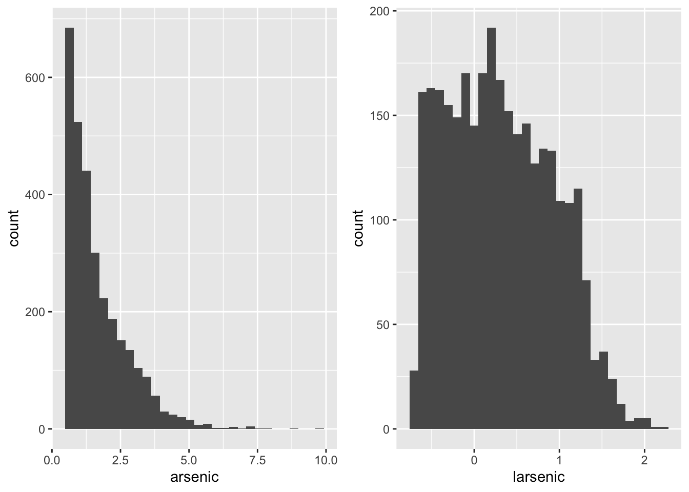
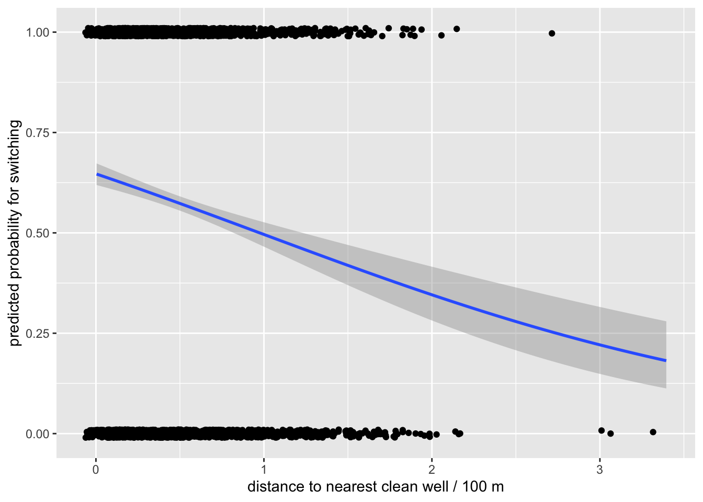

Rows: 3020 Columns: 5
── Column specification ────────────────────────────────────────────────────────
Delimiter: ","
dbl (5): switch, arsenic, dist, assoc, educ
ℹ Use `spec()` to retrieve the full column specification for this data.
ℹ Specify the column types or set `show_col_types = FALSE` to quiet this message.
`stat_bin()` using `bins = 30`. Pick better value with `binwidth`.
`stat_bin()` using `bins = 30`. Pick better value with `binwidth`.

Most households have arsenic levels close to 0, and very few have levels greater than 5. Therefore when we take the log of these values most will fall between negative infinity (those that are close to 0) to 1 (approx.), below is a natural log plot to better visualize this relationship
x <-seq(0, 10, by =0.01)y <-log(x)data.frame(x,y) |>ggplot(aes(x = x, y = y)) +geom_line() +geom_abline(intercept =log(2.5), slope =0, color ="blue")
fit1 <-glm(switch~ dist100, family =binomial(link ='logit'), wells)modelsummary(fit1)
(1)
(Intercept)
0.606
(0.060)
dist100
−0.622
(0.097)
Num.Obs.
3020
AIC
4080.2
BIC
4092.3
Log.Lik.
−2038.119
F
40.744
RMSE
0.49
b)
wells |>ggplot(aes(x = dist100, y =switch)) +stat_smooth(method ='glm', method.args =list(family ="binomial"), formula = y ~ x) +geom_jitter(width =0.1, height =0.01) +xlab("distance to nearest clean well / 100 m") +ylab("predicted probability for switching")

c)
From the first two parts we see that there is a small but significant relationship between the distance (a 100m increase in distance to a clean well will decrease the log odds by approx. 0.6). This would make sense since we would assume that, given that the households know if their nearest well is contaminated or not, that they would be less inclined to move if the nearest clean well is far.
d)
mean_dist <- wells |>select(dist100) |>summarize(dist100 =mean(dist100))prob_avg <-predict(fit1, mean_dist, type ='response')prob_avg
1
0.5757602
For the average household (in terms of distance to the nearest safe well), the probability of switching is approx .57
e)
First let us calculate the marginal effect from taking the derivative of \(P(Y = 1 | X)\)
This figure suggests that for the person which corresponds to the average distance towards the nearest clean well, the regression would predict that if they live 100 meters further, we would predict a 0.15 decrease in the probability of moving. Now let’s find the “divide by 4” and average partial effect
div4 <-as.numeric(coef(fit1)[2]/4)avg_partial <-mean(coef(fit1)[2] *predict(fit1, type ='response') * (1-predict(fit1, type ='response')))data.frame(divide_by_4 = div4, avg_partial, marginal_at_mean = marginal_avg)
The marginal effect of the average household is sandwiched between the average partial effect and the “divide by 4” value. This suggests that the effect of the independent variable on the probability of the event occurring at the average values of the predictors is less than the maximum possible effect (as given by the “divide by 4” rule). Additionally, on average, the effect of the independent variable on the probability of the event occurring is less than its effect at the average values of the predictors.
Q3: Predictive performance of fit1
a)
wells <- wells |>mutate(p1 =predict(fit1, type ='response')) |>select(p1, dist100, everything())
This means that pred1 overestimates the switch rate for approx. 30 percent of the data.
d)
true_positive <-sum(as.numeric(wells$pred1 ==1& wells$switch==1))true_negative <-sum(as.numeric(wells$pred1 ==0& wells$switch==0))false_positive <-sum(as.numeric(wells$pred1 ==1& wells$switch==0))# your website has a typo when explaining what this one wasfalse_negative <-sum(as.numeric(wells$pred1 ==0& wells$switch==1))conf_mat <-table(1:2, 1:2)conf_mat[1,1] <- true_negativeconf_mat[2,2] <- true_positiveconf_mat[1,2] <- false_negativeconf_mat[2,1] <- false_positiveconf_mat
1 2
1 194 133
2 1089 1604
# I later found out that there is an easier way to do this... conf_mat1 <-table(wells$pred1, wells$switch)
The results in the previous part makes intuitive sense because we found in part c) that pred1 overestimates the switch rate for approx. 30 percent of the data. This means that pred1 should systematically pick up true values well but false values poorly.
wells |>summarize(mean(switch))
# A tibble: 1 × 1
`mean(switch)`
<dbl>
1 0.575
This would mean that the null model predicts a 100 percent switch rate, let’s use this to calculate the error rate (we don’t need to calcualte the sensitivity and specificity because they would be 100 percnet and 0 percent respectively)
The null model overclassifies approx. 42 percent of the data, which means that the null model performs worse than fit1 (or in other words, including dist100 is better at predicting the outcome of switch than not including it).
Q4: Additional regressions: fit2, fit3, and fit4
a)
fit2 <-glm(switch~ larsenic, family =binomial(link='logit'), wells)
b)
fit3 <-glm(switch~ zeduc, family =binomial(link ='logit'), wells)
There is a statistically significant and positive relationship between the log arsenic levels and switch rate. The sign makes intuitive sense because the higher the arsenic levels, the odds of switching should increase.
It seems as if even though there is a statistically significant relationship between the the change of 1 standard deviation of education and the log odds of switching, although the magnitude of this effect is quite small. The sign of its coefficient is positive which may be because: people who have had more education on average is more aware of the long-term negative health effects of contaminated wells. However, it is good to note that this is an average effect and there are many people in the dataset who have 1 standard deviation less than the average education, who do switch to a healthier well.
It seems that distance to the well has a slightly larger impact on the probability of switching than the log arsenic levels for someone who has the mean value of all three predictors. The level of education (number of sd from the mean) compared to the other two predictors has minimal impact on the probability of switching, according to this regression. The divide by four rules gives larger marginal effective (by magnitude) than the three marginal effects for the average household.
Q6: Predictive performance of fit4
a)
a)
wells <- wells |>mutate(p4 =predict(fit4, type ='response')) |>select(p4, dist100, everything())
This regression has a significant reduction or error compared to the null model, as compared to the null model of everyone switching it has much better spesificity.
As we can see form this tibble, fit1 has very high sensitivity with very low specificity, while fit4 has lower sensitivity but much better specificity and a lower error rate. This suggests that fit4 is better than fit1 at correctly predicting cases where a household does not switch to a clean well. This improvement also outweighs its lack of predictive power when it comes to correctly predicting a household switching when it actually does switch, as it has a overall lower error rate (which both sensitivity and specificity contributes towards).